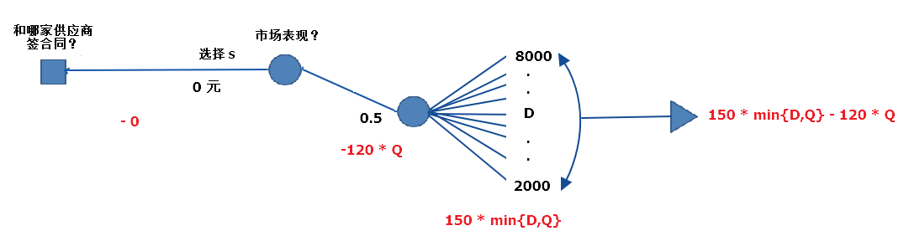

终于来到第五弹了，这是「运营分析」的最后一部分，我们将会综合运用前几期的知识（包括描述性分析、预测性分析所涉及的规划求解和模拟分析等方法），解决我们在一开始所设立的「报童问题」。
在开始进入案例之前，有必要带大家先认识一下我们接下来的决策过程所要采用的「决策树」–一种决策优化的科学方法。
决策树一般由决策节点、条件节点和结果节点三个元素组成。
决策节点：顾名思义就是我们最终需要做的决定是什么？一般用正方形节点表示。
条件节点：一般用于描述决策制定过程中的不同选择，可以体现业务场景的各种不确定性。用圆形节点表示。
结果节点：描述选择不同条件时候会的到的不同结果。用三角型节点表示。
「决策树」这种看似抽象的方法，实际上一旦和具体案例结合，你会发现是一种非常直观的帮助制定最优决策的方法。来吧，直接进入案例。
案例一：IDEA公司决定如何采购帐篷
IDEA公司决定，明年在市场上以150元一顶的价格，销售某种旅行帐篷，根据预测，明年的市场可能很旺，也可能很淡，如果市场旺，那么这种帐篷可以销售10000顶，如果市场淡，则只能销售5000顶，市场旺或淡的概率正好五五开。
IDEA考虑从S和P两家帐篷生产商处采购这种帐篷，两家厂商都要求IDEA必须使用他们100%的产能，并且IDEA只能和其中一家签合同。
S和P两家公司的产能和成本情况如下：

那么，IDEA需要做的决策就是和哪一家供应商签合同？从这个根本问题出发，我们绘制出下面这样的「决策树」：
在绘制决策树时，有两点需要牢记：
每个条件节点各个条件的发生概率之和为1；
每个结果节点的输出数值需要统计从决策节点到结果节点路径上的所有中间结果。
从上面这棵「决策树」的结果节点，我们可以得到的信息是，IDEA公司选择不同的供应商，利润空间也会有很大的区别。如果选择S公司，那么无论市场的淡旺，都能有150000的利润；而如果选择P公司，那么有可能赚取丰厚的450000利润，也有可能损失300000。
那么IDEA到底应该如何选择呢？我们有三种策略。
最小值优先。
就是选择可以使的最小利润最大化的策略。是一种低风险的策略。
我们从结果节点开始往前追溯，在每一个条件节点，我们都取结果节点中的最小值，在决策节点，我们取所有条件节点的最大值。
根据这样的策略，IDEA的「决策树」可以作如下调整：

因此，IDEA应该选择S公司，可以保证有150000的利润。
最大值优先。
就是选择可以使得最大利润最大化的策略。是一种高风险的策略。
和最小优先类似，也是从结果节点开始向前追溯，不同的是，在每一个条件节点，我们选取的是结果节点中的最大值，在决策节点，依旧选取条件节点的最大值。
根据这样的策略，IDEA的「决策树」可以作如下调整：


因此，IDEA应该选择P公司，可以搏一把450000的利润。
期望值优先。
就是选择可以使得利润的期望值最大化的策略。是一种风险适中的策略。
还是从结果节点出发向前追溯，和以上两种策略不同的是，条件节点这次的赋值不是最小值也不是最大值，而是「期望值」，期望值的计算方法，我们前面的内容多次提到过，就是所有结果的均值。
根据这样的策略，IDEA的「决策树」可以作如下调整：
因此，IDEA应该选择S公司，可以稳妥的获得150000利润。
在这个例子中，中性风险的选择结果正好也和最低风险的结果一致，因此，IDEA和S签定供货合同无论市场好坏都可以获得150000的利润，目前来看是一个很不错的选择。
-决策树结合模拟分析
案例二：修改案例一的条件
在案例一中，我们假设了市场需求存在两种情况，50%的可能需求旺盛，为10000顶帐篷；50%的可能需求平淡，为5000顶帐篷。而实际市场的需求情况比这要复杂。
这一次，我们假设市场的需求是在一个最低值和最高值之间平均分布的，在这个区间内，出现任何实际需求值的概率都相同。总体上依旧把市场按50%的概率分为旺和淡两种情况。
市场需求平淡时，需求最低2000顶，最高8000顶。
市场需求旺盛时，需求最低6000顶，最高14000顶。
我们要如何在决策树中体现目前的情况呢？
为了让思路清晰，我们单独「决策树」中某一条分支的情况。以选择S作为供应商，在平淡市场需求情况下为例。

固定成本为0，采购数量用Q表示，在需求平淡的情况下Q=5000。
实际需求用D表示，那么2000 <= D <= 8000。
如果D <= Q，那么收入为：150 * D。
如果D >= Q，那么收入为：150 * Q。
所以，可以用公式表示出IDEA选择S在市场平淡情况下的利润：
150 * min{D , Q} - 120 * Q。
接下来，接可以采用上一弹「模拟分析」中的方法，模拟1000次不同需求情况下的利润，并求出期望值。具体的「模拟分析」步骤就不重新介绍了，可以回顾第四弹的内容，这里我们只列出计算结果：
需要注意的一点是，在生成1000个随机的需求值时，我们使用的是平均分布。
至此，我们已经可以将「决策树」的这一分支简化为如下结果：
同理，将另外三种情况的结果节点的期望值计算出来。
选择S，市场需求旺盛的情况：
选择P，市场需求平淡的情况：
选择P，市场需求旺盛的情况：
最终，得到「决策树」如下：
然后，我们采用「期望值优先」的策略从结果节点往前追溯：
相比案例一的简单假设，选择S的期望值从150000变成了96203，而选择P的期望值也从75000变成了6575。因此，在这种情况下，IDEA选择S作为供货商还是靠谱一些。
-综合决策树、模拟分析和规划求解
案例三：修改案例二的条件
在上面的两个案例中，我们假设的是IDEA都必须和S或P当中的一家签订合同，并且必须使用他们100%的产能。现在，供应商P给IDEA开出了另外一个合同：
固定的预付款项从50000提高到100000；
第一笔订单至少需要订购4000顶；
第二笔订单可以在0到6000顶之间根据市场需求情况任意调整。
根据这个新的合同，IDEA在P这里的订货量可以是4000到10000之间浮动的了，而不是先前固定的必须10000顶。
那么，我们可以采用第三弹「规划求解」中的方法，来分别计算出选择P作为供货商在市场淡旺情况下的最佳订货数量。
在上面案例二中，我们已经模拟出了在固定订货量为10000的情况下利润的期望值，在此基础上，调整Q的值，以使得期望值最大。
市场需求平淡时：
市场需求旺盛时：
根据计算的结果，更新「决策树」：
再从条件节点向决策节点追溯一步：
可以得出最新的结论：可以根据市场需求情况调整采购数量的合同可以给IDEA带来更多的利润，利润期望值从先前的6575提高到160254，IDEA显然应该选择P作为供货商。
-总结
是时候总结一下解决「报童问题」的方法了。还记得在第二弹中一开始使用案例吗？就是你在家门口开了一家只供应一种鲜奶的小店，成本3元一瓶，售价5元，并且我们有过去100天的历史销量：
现在我们可以通过综合运用「需求预测」、「模拟分析」和「规划求解」来计算出提前订购多少瓶鲜奶是最优策略了。
分析过去100天的历史数据，得出的未来需求的概率分布满足均值为52.81，标准差为15.10的正态分布。
设订货量依旧为Q，市场需求为D，那么利润：P = 5 min{D,Q} - 3 Q。
「模拟分析」过程中使用的随机样本生成的设置如下：
使用「规划求解」后结果如下：
我们还可以限制风险承受范围，假设对结果的标准差限制为小于35：
至此，我们终于把「运营分析」的内容都介绍完啦，竟然花了四期。从需求的预测，到规划求解，再到模拟分析，最后在决策树中综合运用这些分析方法，实现了对具体商业问题的决策优化。希望这些知识可以在具体的工作中帮到您，或者是给您一些解决类似问题的思路和启迪。